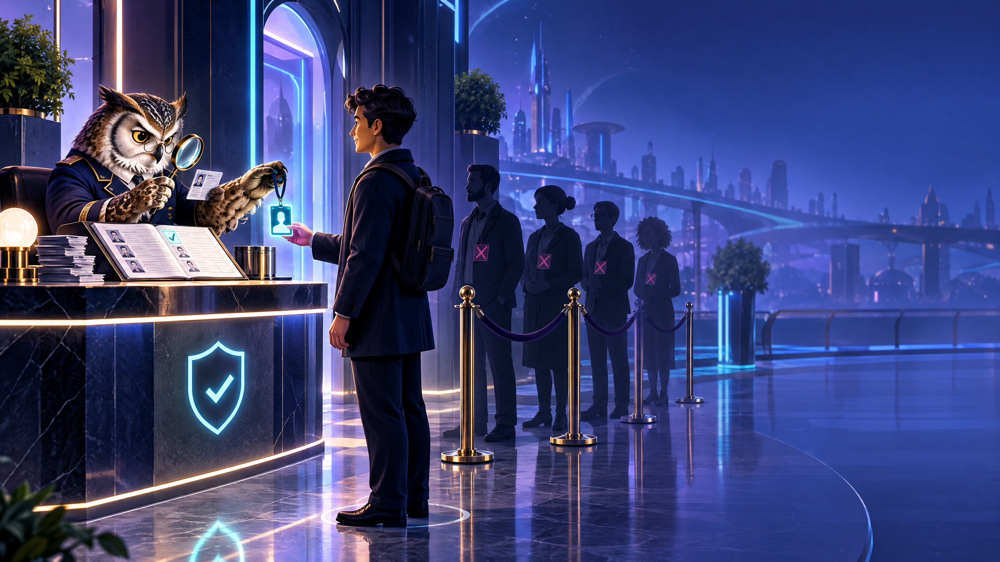

▣
Mobile internet
QUICK SETUPPhone hotspot
Use your carrier’s Wi-Fi hotspot when you need to connect a laptop or another device without a cable. Carrier limits and plan terms still apply.
 MuseAi-FED-NETFedNet operator
MuseAi-FED-NETFedNet operatorMuseAi-FED-NET brings the upstream connection up, proves it works, watches it, heals bounded failures, and keeps guest sharing closed until the policy says otherwise.
FedNet is the control layer. Your carrier, hotspot, phone, or travel router supplies the connection underneath it.
Use your carrier’s Wi-Fi hotspot when you need to connect a laptop or another device without a cable. Carrier limits and plan terms still apply.
USB tethering keeps the phone physically connected and is the upstream path this project is built to validate on Windows.
A dedicated hotspot or travel router can share a mobile plan with several devices. Keep its admin surface protected and treat guest access as a separate policy decision.
Watch reachability, route selection, DNS behavior, and bandwidth before opening any service to another person or device.
Detailed visuals for the parts that matter: control, recovery, admission, and fair use.

Start the upstream pipe, verify reality, and keep the control plane honest.
MuseAi-FED-NET · https://museai-fed-net.pages.dev
Check, heal twice, report with a timestamp, and stop when the limit is reached.
MuseAi-FED-NET · https://museai-fed-net.pages.dev
No open port, no accidental guests, no mysterious “temporary” exception.
MuseAi-FED-NET · https://museai-fed-net.pages.dev
If the identity is not listed, the answer is not a creative interpretation of “in.”
MuseAi-FED-NET · https://museai-fed-net.pages.devPer-guest caps and explicit bursts keep the policy visible and enforceable.
MuseAi-FED-NET · https://museai-fed-net.pages.devPort zero, empty allowlist, empty forwarding, zero bandwidth. The safe state is the starting state.
The watchdog is helpful, not immortal. Two attempts, timestamped evidence, then a clean stop.
The policy layer decides who and what may pass before any platform enforcement engine opens a socket.
Bring questions, logs, and the occasional packet joke. The Discord widget is centered on purpose.
Read the policy, inspect the implementation, and keep the upstream pipe in its proper place: useful, verified, and never confused with the gateway.
Read the FED-NET brief →